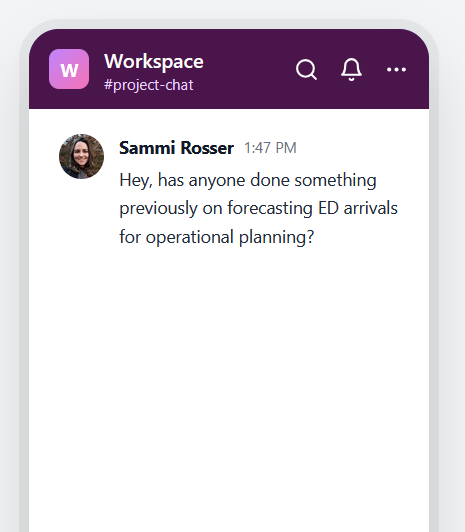
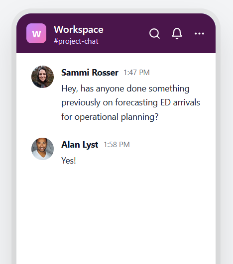
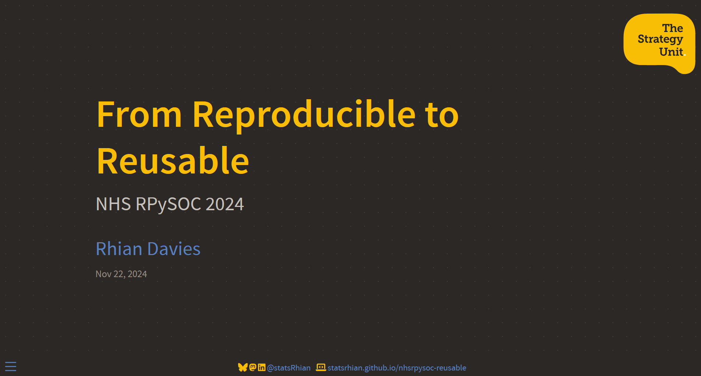
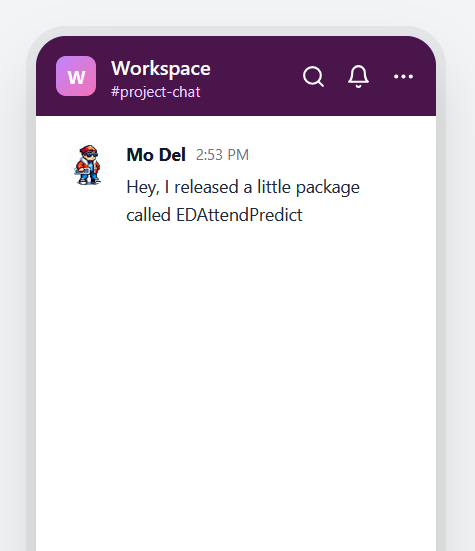
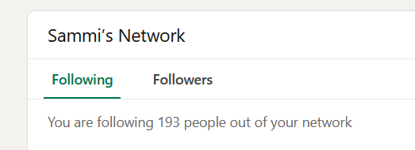
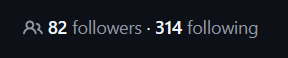
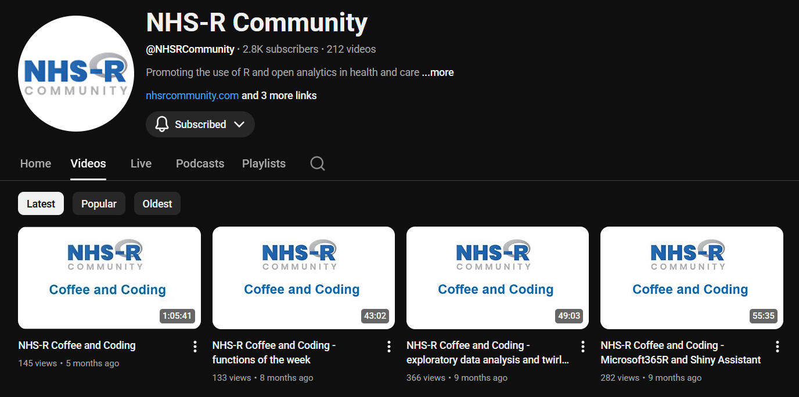
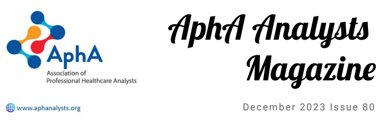
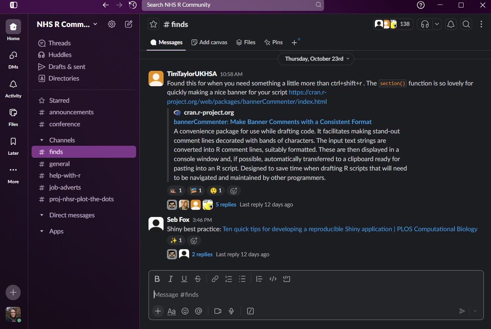

Reusable by Default
Reflections on Building Sustainable Open Tools
and Knowledge for Healthcare






Who am I to come here and talk about this?


The utopia we want to reach


The Tapestry of ‘Reusable by Default’


(or any online repository hosting)
- On GitHub > emailed/Slacked
- Point your managers to
- the NHS-R Statement on Tools - 17 NHS orgs, but I know there are more!
- the NHS England Open Code Statistics - over 2000 open repos
- Not ready to use it in full? Drag and Drop.
- Borrow repo templates from other people!

- If you don’t add a licence, I can’t use your code!
- Yes, even if you emailed it to me (unless you were clear)
- It’s one ‘special’ file (LICENCE or LICENCE.md) GitHub Recognises
- Once you settle on one, it’s a 1 minute job
- Sites exist to help you pick (choosealicense.com/)
- MIT & GPL3 are a good place to start
And you write them like this (in )


Allowed to use AI? Rope it in!

They generate a dictionary

(this is Quartodoc)
And display your docstrings

(this is Quartodoc)


- GitHub has fantastic free project tracking tools built in
- Helps you to keep track of what you haven’t done yet
- Helps others understand what’s left to happen
Where are we now?

Last chance…
Remember our plea from the start?



- We need to start identifying the bits of the work we do that we can turn into reusable elements
- Look for patterns and repetition
- Write more functions
- Think how to accept elements as arguments instead of hard coding them
A desire to better visualise patient journeys internally…
Became an R-powered PowerBI Theograph Visual

These pieces set the stage

The challenge












What next?

Get in touch
Add Me On LinkedIn - Sammi Rosser
Follow Me On GitHub - Bergam0t
Watch other talks @ sammirosser.com
Email me - hi@sammirosser.com
Check out HSMA - hsma.co.uk
Acknowledgements
Slack chat mockups generated from chatmockup.com
Images generated with DALL-E3 or ChatGPT-5
Hex stickers built on Canva (all images used via Canva Pro subscription)
The STARS project team for their work on reusability
Huge thanks to Dan and all of our
And many thanks to the NIHR/PenARC for funding us!